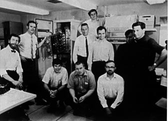

The beginning of the internet:
"We set up a telephone connection between us and the guys at SRI ...", Kleinrock ... said in an interview: "We typed the L and we asked on the phone,
"Do you see the L?"
"Yes, we see the L," came the response.
We typed the O, and we asked, "Do you see the O."
"Yes, we see the O."
Then we typed the G, and the system crashed ...
Yet a revolution had begun" ....
On October 29, 1969 Arpanet was created.
It is widely considered to be the first real network to use the new packet switching technology.
The first connection was established between Stanford and UCLA.
Later, Arpanet grew from the first bilateral connection, to the first network which was established between America’s universities.
Arpanet was the precursor to the inter-net, which we rely on so heavily today, and will likely continue to rely on for many future generations to come.
It was proof of concept for the ideas that some of the world’s earliest Computer Scientists had proposed earlier.
Today many people make use of the internet every day - it’s a fantastic tool.
The list goes on and on. I just wanted to demonstrate a couple of these ways that different people might benefit from the internet.
One of the earliest email messages were sent from this Arpanet computer.
Computer Science legends Dennis Ritchie and Ken Thompson work on an Arpanet using computer here (before they created Unix).
This is the team at Berkeley that established the first computer network in the history of man kind.